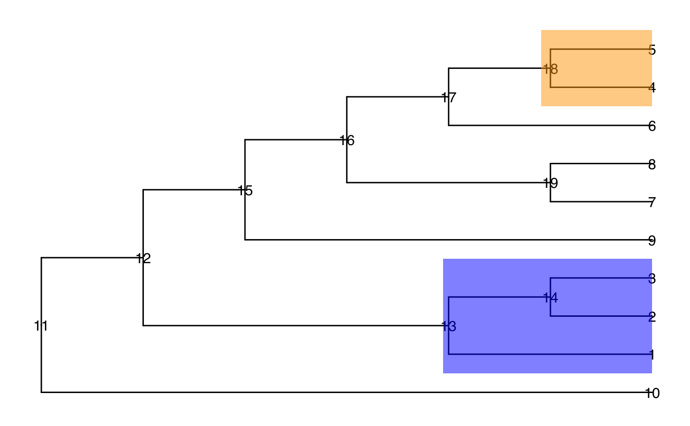

evalCand.RdevalCand evaluate all candidate levels and select the one with best
performance
evalCand( tree, type = c("single", "multiple"), levels = cand_list, score_data = NULL, node_column, p_column, sign_column = sign_column, feature_column = NULL, method = "BH", limit_rej = 0.05, use_pseudo_leaf = FALSE, message = FALSE )
| tree | A phylo object. |
|---|---|
| type | "single" or "multiple". |
| levels | A list of candidate levels that are selected by
|
| score_data | A data frame ( |
| node_column | The name of the column that gives the node information. |
| p_column | The name of the column that gives p values of nodes. |
| sign_column | The name of the column that gives the direction of the (estimated) change. |
| feature_column | The name of the column that gives information about the feature. |
| method | method The multiple testing correction method. Please refer to
the argument |
| limit_rej | The FDR level. Default is 0.05. |
| use_pseudo_leaf | TRUE or FALSE. If FALSE, the FDR is calculated on the leaf level of the tree; If TRUE, the FDR is calculated on the pseudo leaf level. The pseudo-leaf level is the level on which entities have sufficient data to run analysis and the level that is closest to the leaf level. |
| message | A logical value, TRUE or FALSE. Default is FALSE. If TRUE, the message about running process is printed out. |
a list.
candidate_bestthe best candidate level
outputthe result of best candidate level
candidate_lista list of candidates
level_infothe information of all candidates
the specified FDR level
the method to perform multiple test correction.
More details about columns in level_info.
t the thresholds
r the upper limit of T to control FDR on the leaf level
is_valid whether the threshold is in the range to control leaf FDR
limit_rej the specified FDR
level_name the name of the candidate level
rej_leaf the number of rejection on the leaf level
rej_pseudo_leaf the number of rejected pseudo leaf nodes.
rej_node the number of rejection on the tested candidate level
Ruizhu Huang
#> #> #>#> #> #> #> #>#> #>#> #> #>#> #> #>#> #> #>data(tinyTree) ggtree(tinyTree, branch.length = "none") + geom_text2(aes(label = node)) + geom_hilight(node = 13, fill = "blue", alpha = 0.5) + geom_hilight(node = 18, fill = "orange", alpha = 0.5)#> Warning: `tbl_df()` is deprecated as of dplyr 1.0.0. #> Please use `tibble::as_tibble()` instead. #> This warning is displayed once every 8 hours. #> Call `lifecycle::last_warnings()` to see where this warning was generated.set.seed(2) pv <- runif(19, 0, 1) pv[c(1:5, 13, 14, 18)] <- runif(8, 0, 0.001) fc <- sample(c(-1, 1), 19, replace = TRUE) fc[c(1:3, 13, 14)] <- 1 fc[c(4, 5, 18)] <- -1 df <- data.frame(node = 1:19, pvalue = pv, foldChange = fc) ll <- getCand(tree = tinyTree, score_data = df, #t = seq(0, 1, by = 0.05), node_column = "node", p_column = "pvalue", sign_column = "foldChange") cc <- evalCand(tree = tinyTree, levels = ll$candidate_list, score_data = df, node_column = "node", p_column = "pvalue", sign_column = "foldChange", limit_rej = 0.05 )#> Error in showNode(tree = tree, only.leaf = FALSE): could not find function "showNode"cc$output#> Error in eval(expr, envir, enclos): object 'cc' not found